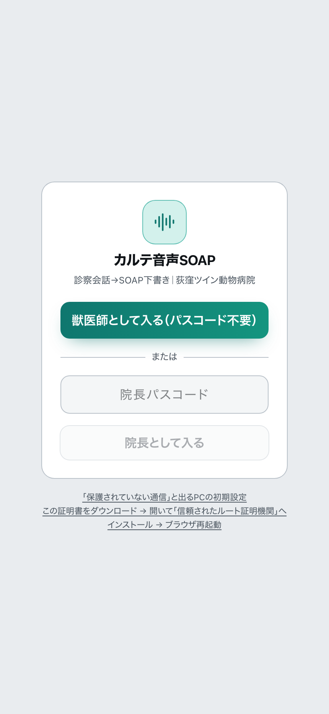
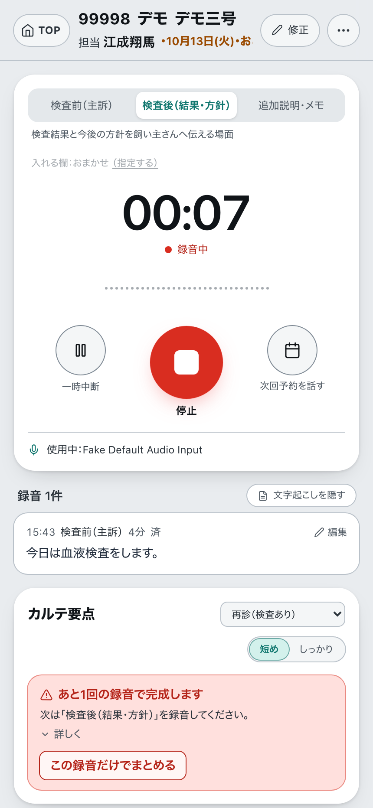
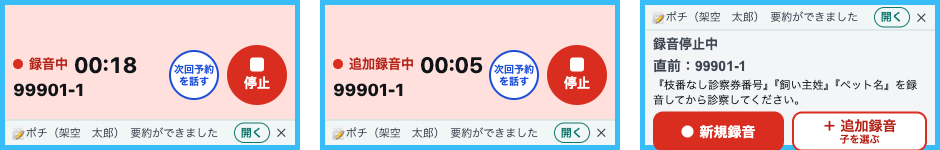
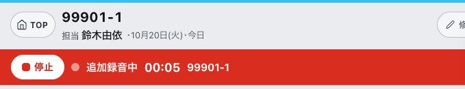
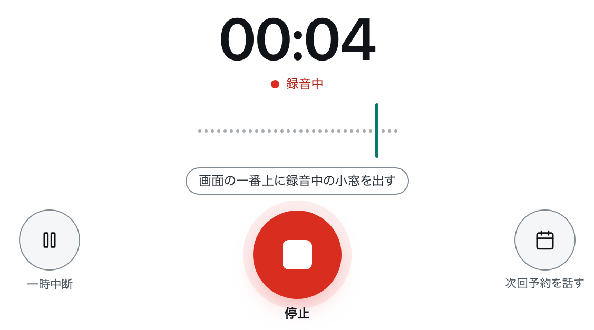
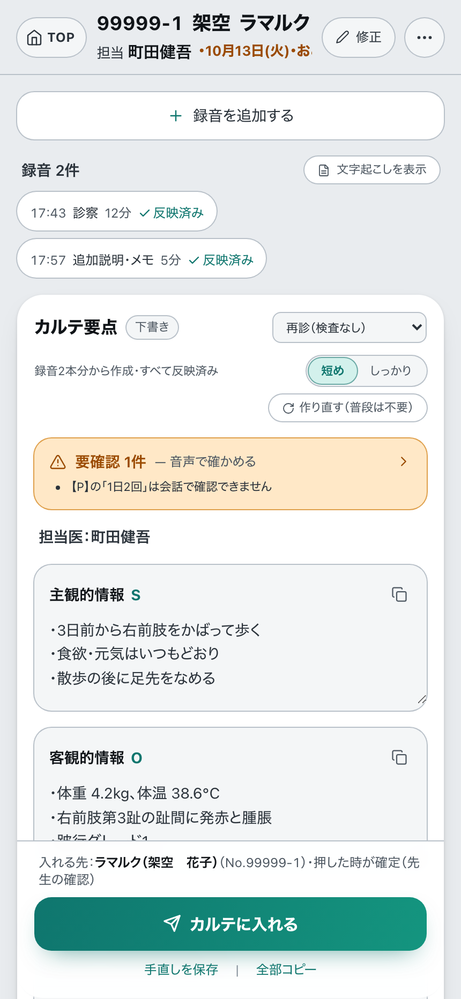
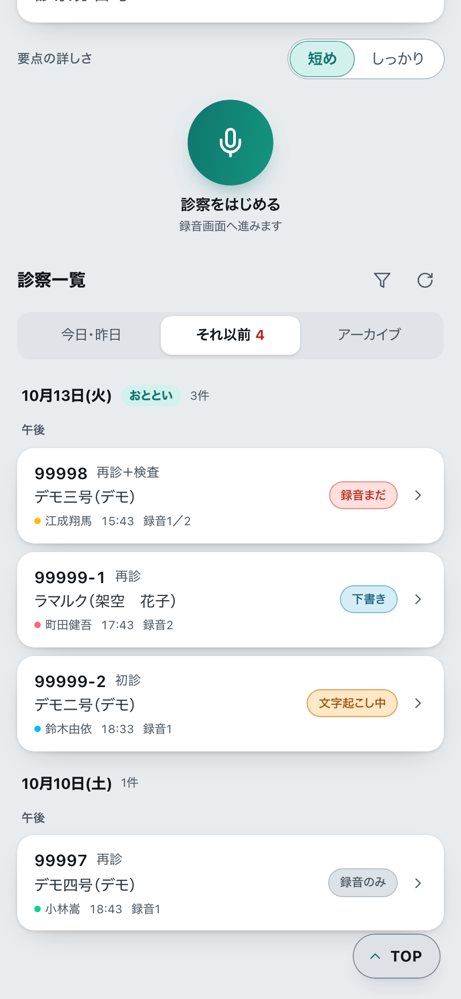

🆕 2026-10-13 画面を新しくしました（ボタンの場所の整理）。使い方の流れと要点の精度は変わりません。前の画面にあったボタンの行き先は下の表のとおりです。
🎨 2026-10-14 配色を「グレー地×深緑」にしました（前の配色は色が薄くて見えにくかったため）。あわせて、戻るボタンを「TOP」にし、診察画面の上の見出し（診察券番号・飼い主の姓・ペット名）と担当医の名前を大きくしました。
| 前の画面 | いまの場所 |
|---|---|
| トップ右上の「⚠ 要確認」「📖 用語辞書」「🗒 メモ候補」「💡 改善リクエスト」 | 右上はベル（要確認の件数）と三本線のメニューだけ。用語辞書・メモ候補・改善リクエスト・ログアウトはメニューの中。 |
| トップの①〜④の番号 | 番号は無くなり、上から「診察タイプ」「担当」「カルテNo.」「要点の詳しさ」の順。 |
| 診察タイプの「再診（検査なし／検査あり）」「初診（検査予定）」 | 「再診（検査なし）」はトップにそのまま並びます。「再診（検査あり）」「初診（検査予定）」は「万能」にまとめました（2026-10-14〜）。 |
| 診察画面 右下の「🏠 診察をはじめる」 | 無くなりました。画面の上の帯の左の「TOP」（家のアイコン）でトップへ戻ります。 |
| 「✎ 担当医を変える」「✎ カルテNo.を修正」 | 上の帯の「修正」（担当医の変更はここ1か所だけ）。 |
| ページ下の「🗄 アーカイブに移す」・削除、各欄の「✕ この欄を消す」 | 上の帯の「…」のメニュー（アーカイブに移す／要点の欄を消す…／この診察を削除）。 |
| 要点の上に何枚も出ていた案内（つぎにすること・あとN回・未反映 など） | いちばん大事な1つだけを色の帯で出します。長い説明は帯の「詳しく」。「つぎにすること」は無くなりました。 |
| 「この症例は完了 → 次へ」 | 「完了 → 次へ」（最後は「完了 → 一覧へ」）。 |
| 場所 | URL・必要なもの |
|---|---|
| 院内（病院のWi-Fi） | https://192.168.20.250:3601 Tailscaleは要りません。病院のWi-Fiにつないで、このURLをそのまま開いてください。初回だけ「保護されていない通信」等の警告が出ることがありますが →「詳細」→「このまま進む」で開けます（院内の安全なアプリです）。ログイン画面下の証明書を入れると警告は消えます。 |
| 院外（自宅など） | https://serverpc.tail2de5bb.ts.net:8449 院外から使う時だけ Tailscale の設定が必要です（分からなければ院長へ）。 |

「獣医師として入る（パスコード不要）」を押すだけです。一度入ると同じ端末では約30日そのまま使えます。（「院長として入る」は院長用です。）
トップ画面の「要点の詳しさ」（短め｜しっかり）で選びます。ふだんは「短め」のままで大丈夫です（初めから「短め」が選ばれています）。
| 選択 | 中身 |
|---|---|
| 短め（既定） | 要る事だけを短く。カルテを読み返す時に速い。 |
| しっかり | 会話の細かいところまで拾う。込み入った説明をした日や、後で経過を追いたい時に。 |
診察をはじめる時に選びます。タイプによって要点の見出しと必要な録音回数が変わります。
トップには「万能」「再診（検査なし）」「手術・入院」「健康診断」の4つが並びます（2026-10-14〜・スマホは2つずつ2段）。迷ったら「万能」で大丈夫です。
| タイプ | 要点の形 | 録音 |
|---|---|---|
| 万能（どんな診察でも） 2026-09-28〜・予約表の受付から録音した時もこれ | 会話にあるものだけで S・O・A・P（話に出なかった見出しは作らない） | 回数は決めない。1回でも、検査の後にもう1回録っても、その都度まとめ直す |
| 再診（検査なし） | S・P（主訴と計画のみ） | 1回・録り終えると自動でまとまる |
| 手術/入院 2026-08-20に「半日入院／手術当日」から改称 | 【預かり】【お返し】を別々に | 預かり・お返しの2回。お返しが翌日以降でも、その録音した日のカルテに入ります |
| 健康診断（問診） 2026-08-18〜 | 【気になること】【ふだんの様子】【診察室での所見】【今回の健診プラン】 | 1回だけ（お預かり前の問診） |

録音カードのいちばん上に、タイプに合わせた場面のボタンが横並びで出ます（例：検査前（主訴）／検査後（結果・方針）／追加説明・メモ。ほかに 診察／問診（初診）／結果説明／預かり・お返し／問診（お預かり前） など）。下に選んだ場面の説明が1行出ます。飼い主さんのいない所での口述（所見メモ）も「追加説明・メモ」で録れば要点に反映されます。
場面のボタンの下に「入れる欄：おまかせ（指定する）」と1行出ています。ふだんは「おまかせ」（自動）のままでOK（この欄は畳まれています）。押すとおまかせ／S 主観／O 客観／A 評価／P 計画が開きます（指定した時は開いたまま見えます）。S／O／A／Pをタップして選ぶと、その録音の内容を必ずその欄に入れます（例：追加でやった検査の説明を「O（客観）」に固定したい時）。複数選択もできます（2026-07-25〜）：例えば S と O を両方選ぶと、その録音の内容をSとOに振り分けて入れます（それ以外の欄には入れません）。もう一度タップで解除、「おまかせ」で全部解除。指定は1録音ごとで、送信すると「おまかせ」に戻ります。
録音カードの真ん中に大きなタイマー（00:00）と状態（待機中／録音中／一時中断中）、その下に音の大きさの波形が出ます。波形が動いていればマイクが音を拾えています。
診察室のパソコン（Chrome）で「録音」を押すと、画面の一番上に小さな窓が出ます。Ahmics や予約表を手前に出しても隠れません。録音の止め忘れを防ぐためのものです。

診察画面でも、録音中は画面の上に赤い帯が出ます（2026-10-20〜）。「■ 停止」・「録音中（追加録音中）」・経過時間・診察券番号・姓・ペット名が並び、下にスクロールしても見えます。帯の「停止」は録音カードの停止ボタンと同じです。

録音の前に小窓を出しておくこともできます（2026-10-17〜）。トップの右上、ベルのアイコンの左の小窓のアイコン（四角の中に小さな四角）を押すと小窓が出て、そこから「新規録音」で始められます。

小窓が出ている時に電子カルテや予約システム（受付タブ）の🎙を押すと（2026-10-20〜）、小窓を出しているタブでその子の録音が始まり、小窓が「● 録音中」に変わります。🎙で開いた新しいタブは自動で閉じます（画面は前に出ません。録音が始まったことは小窓で分かります）。小窓を出していない時は、今までどおり新しいタブで録音が始まります。

| 場所 | 中身 |
|---|---|
| 左の「TOP」 | 家のアイコン。トップ（診察をはじめる・診察一覧）へ戻ります。 |
| 真ん中 | 1行目に大きく「診察券番号 飼い主の姓 ペット名」（例 1234-1 山田 ポチ）。2行目に「担当 ○○」（先生の名前は太字）と日付（今日以外の診察は日付の色が変わります）。画面が狭い時は途中で切らずに2行に折り返します。 電子カルテの飼い主名に姓と名の間の空白が無い方は、姓だけでなく名前全体が出ます。多頭で一緒に診た時はペット名だけです。 |
| 「修正」 | 押すとカルテNo.を直す欄と担当獣医師を選び直す欄が開きます（→ 下の「担当獣医師をまちがえた時」）。カルテNo.が未設定の時は最初から開いています。 |
| 「…」 | この診察の管理：アーカイブに移す（アーカイブ済みなら「診療中に戻す」）／要点の欄を消す…／この診察を削除。 |
録音が済むと自動で要点ができます（タイプによっては「要点をまとめる」を押します）。内容がいまいちな時は、要点の右上の下にある小さな丸ボタン「作り直す（普段は不要）」（未反映の録音がある時は、このボタンは出ず帯のボタンだけになります）。各欄はその場で手直しできます。
「カルテ要点」の見出しの右に診察タイプの切り替え、その下の1行に「録音N本分から作成・すべて反映済み」と「短め｜しっかり」が出ます。
以前は要点の上に案内が何枚も並んでいましたが、いまはいちばん大事な1つを色の帯で出します。長い説明は帯の「詳しく」を開いた時だけ出ます。
| 帯 | 意味・ボタン |
|---|---|
| あとN回の録音で完成します | タイプで決まった回数の録音がまだ済んでいません（「次は「○○」を録音してください」）。録り忘れた時は帯のボタン「この録音だけでまとめる」（要点がある時は「この録音だけで作り直す」）。 |
| 新しい録音を要点にまとめ直しています… | 自動です。終わるとそこに反映されます。 |
| 新しい録音が要点に反映されていません | 手直し保存・確定の後に録音を足した時です。帯のボタン「すべての録音で作り直す」。 |
| まだ「○○」を録音していません | 例：検査後をまだ録っていない。検査をせず終わった場合はこのままカルテに入れて大丈夫です。 |
要点ができた後に録音（や追加説明・メモ）を足しても、文字起こしが終わり次第、自動で全部を含めてまとめ直されます。この処理はサーバー側で動くので、画面を閉じていても・別の患者を診ていても進みます。画面を開いていると帯に「新しい録音を要点にまとめ直しています…」と表示され、終わると自動で切り替わります。
「録音 N件」の下に、録音ごとに小さな丸い札（時刻・場面・分・状態）が並びます。要点の見出しの下にも「録音N本分から作成・すべて反映済み」と常に表示されます。
| 札の状態 | 意味 |
|---|---|
| ✓ 反映済み | この録音の内容は、いまの要点に入っています。 |
| 未反映 | この録音はまだ要点に入っていません（まとめ直し待ち。通常は自動で数十秒〜数分で「反映済み」に変わります）。 |
| ✓ 転記済み | この録音の分はすでにAhrmicsのカルテへ入れ済みです。 |
| 文字起こし中 | 文字起こしの処理中です（終わると自動で要点へ）。 |
| 済 | 文字起こしは終わり、要点はまだ作っていません。 |
| 失敗 | 文字起こしに失敗しました（札が開いて理由が出ます）。 |
見張り（→ 9）に引っかかった記載があると、要点の上に「要確認 N件 — 音声で確かめる ›」の帯が出ます。押すと要確認の画面へ進みます。
要点の下に体重（kg）・体温（℃）の小さな入力欄が横に2つ並びます。会話で言った体重・体温が自動で欄に入ります（例：「体重4.2キロ、体温38度6分」）。カルテに記録済みの値にはチェックが付きます。数字を確認して、「カルテに入れる」時に一緒にAhrmicsへ記録されます。手で直してもOK。
録音を始めてから担当医の選び間違いに気づいても直せます。診察の画面の上の帯の「修正」を押すと、カルテNo.の下に「担当獣医師」のボタンが出るので、正しい先生を押して選び直してください（担当医の変更はここ1か所だけです。要点の中の「✎ 担当医を変える」は無くなりました）。録音の途中でも、終わった後でも、要点ができる前でも変えられます。
要点ができると、文字起こし全文と録音カードは自動で畳まれ、要点がすぐ読めます（録音は小さな丸い札だけになります）。全文を見たい時は「文字起こしを表示」（全文と「編集」が出ます）、録音を足したい時は「＋ 録音を追加する」で開けます。
| ボタン | 意味 |
|---|---|
| カルテに入れる 画面の下に貼り付いた大きなボタン | 要点を確定して Ahrmicsの主観ノートへ書き込み。要点を読んでいる間も画面の下に貼り付いています。ボタンの上に「入れる先：○○（No.…）・押した時が確定（先生の確認）」が出るので確認して1回押すだけで反映（確認ダイアログはありません）。体重・体温も一緒に記録。入れると診察はアーカイブへ。 |
| 全部コピー ボタンの下「手直しを保存｜全部コピー」 | 要点を【見出し】付き（例【主観的情報：S】）でまとめてコピー。Ahrmicsに手で貼りたい時・紹介状など他の書類に写したい時に。カルテに入れた後（アーカイブ後）にも出ます。 |
| コピーのアイコン（各欄の右上） 2026-09-04〜 | 各欄は「主観的情報 S」「客観的情報 O」のような見出しで、右上のコピーのアイコンでその欄の中身だけをコピーします（【 】の見出しは付きません）。S・O・A・P が別々の欄になっているカルテに、1欄ずつ貼るためのものです。 |
| 手直しを保存 | 手直しした要点を保存だけ（カルテにはまだ入りません）。保存に失敗した時は赤い文で知らせ、書いた文は消えずに残ります（もう一度押してください）。以前は失敗しても「保存しました」と出ることがありましたが、直しました（2026-10-13）。 |
| 要点の欄を消す… 上の帯の「…」の中 | 押すと各欄の右上に×が出ます。要らない欄（とくに【備考】）の×を押して消します（保存は「手直しを保存」か「カルテに入れる」で）。 |
カルテに入れた後でも、追加で検査や説明をした時は、その診察を開いて「＋ 録音を追加する」で録音を足せます。追記分の要点は文字起こしが終わり次第 自動ででき、「追記分をカルテに入れる」で同じ日の主観ノートに追加で入ります（前に入れた分はそのまま残ります）。※「作り直す」ではなく「録音を追加する」から足してください。
同じ飼い主さんの複数のこを続けて診察した時（例：わんちゃん2〜3頭）の入れ方です。
診察をはじめる画面のカルテNo.欄に、お家の番号（例 1234）を入れると、多頭のお家は「このお家には3頭います。今日診た子を選んでください（複数可）」と子の一覧が出ます。診た子をタップすると、枝番が自動で入ります（例 1234-1, 1234-3）。枝番を手で打つ必要はありません。
枝番が分かっていれば、カルテNo.欄にカンマ区切りで直接入れてもOKです（例 1234-1,1234-2）。
AIは、会話で言われていないことをもっともらしく書いてしまうことがあります（歯の左右・検査の名前・人の名前など）。アプリが自動で見張っていて、怪しい記載があるとトップの右上のベルのアイコンに件数が出ます（99件を超えると「99+」）。
| 種類 | 意味 |
|---|---|
| 歯の指定 | 会話に無い左右・歯種が書かれていたのでアプリが消しました（「（歯の特定なし）」と付きます）。正しい歯を足してください。 |
| 検査・機器の名前 | 会話に出ていない検査名（内視鏡・心電図など）が書かれています。やっていない検査かもしれません。 |
| 左右 | 会話に「右」「左」が一度も出ていないのに、要点が左右を書いています。 |
| スタッフの名前 | 本文にスタッフ名があります。本当にその人の話かを音声で確かめてください（聞き間違いが実在の名前になることがあります）。 |
| 体重が前回と大きく違う 2026-08-18〜 | Ahrmicsの前回の体重とくらべて10%以上ちがいます（前回の日付と数値も出ます）。小数点の前の1桁は聞き分けが難しく（「いってん」と「にてん」）、音を聞き直しても決まらないことがあるので、過去の実測値と突き合わせています。 |
| 会話に無い時刻 2026-08-18〜 | 要点に書かれた時刻が会話に出てきません。「4時」→「16時」のような正しい直しは通りますが、会話に無い数字（例：会話は「4時」なのに要点が「14時」）だけ出ます。 |
| 肯定と否定が割れている 2026-08-18〜 | 文字起こしが「続いている。続いてない。」のように同じことを逆に書いています。どちらが本当かは聞き直さないと分かりません（実例＝飼い主さんは「続いています」と答えたのに、要点が「続いていない」と逆に書いた）。 |
| 大きさの数値 | 会話に出ていないしこり等の大きさ（〇mm・〇cm）が書かれていたのでアプリが落としました。実測した大きさは先生が書き足してください。 |
| いつの話か結びつかない 2026-08-25〜 | 部位と「〇年前」「〇日前」が1行に書かれているのに、会話ではその2つが離れた場所で別々に語られています。別の部位の時期を取り違えているかもしれません。 実例＝会話で「1年前から変わっていない」と言われたのは首のしこりなのに、要点は左膝のしこりに付けて「悪性の可能性は低い」と書いていた（左膝は先週見つけたばかり）。根拠のない安心材料がカルテに入るところでした。 |
診察タイプを「健康診断（問診）」にして録音すると、要点ができた時点で健診アプリが読める形で自動的に受け渡されます。先生が打ち直す必要はありません。
トップの下半分の「診察一覧」は3つのタブに分かれています。見出しの右に絞り込み（じょうごのアイコン）と更新（くるっと矢印のアイコン）があります。日ごとの中は「午前」「午後」の小見出しで分かれます。下にスクロールすると、右下に「↑ TOP」ボタンが出ます（押すといちばん上の「診察をはじめる」へ戻ります）。

| タブ | 中身 |
|---|---|
| 今日・昨日 | 当日と前日の、まだカルテに入れていない診察。 |
| それ以前 | おととい以前の、まだ入れていない診察（録り忘れ・入れ忘れはここに下がります）。 |
| アーカイブ | カルテに入れ終わった（転記済み）診察。 |
「昔の分をまとめて処理したいのに、1件やるたびに一覧へ戻って延々スクロールする」を無くすための機能です。「診察一覧」の右のじょうごのアイコン（絞り込み）を押して開きます。
| 項目 | 中身 |
|---|---|
| 範囲 | 未処理だけ（既定＝まだカルテに入れていないもの）／全件（カルテ済み・アーカイブも含む）。 |
| 担当医 | 複数選べます（自分の分だけ、など）。 |
| 日付 | 複数選べます。 |
担当医と日付の両方を選ぶと「どちらも満たす」で絞られます。同じ欄の中は「どれか」です。選び終えたら「この条件で見る（◯件）」を押すとパネルが閉じて一覧が出ます。
読み手（他の先生・飼い主さん・他院）が迷わないように、書き方を揃えています。先生が意識して操作することはありませんが、「なぜこう書かれているのか」を知っておくと手直しが速くなります。
| きまり | 中身 |
|---|---|
| 時刻は24時間表記 2026-08-17〜 | 9時／12時／16時／19時のように書きます。「午後4時」「夕方5時半」とは書かず「16時」「17時30分」。会話で午前・午後が言われていない「4時」は、前後の時刻や「朝・夕方」の語から判断して直します。判断できない時刻は「⚠要確認」に出ます。 |
| 経過は時系列順 2026-09-04〜 | 飼い主さんは思い出した順に話すので、そのまま書くと前後します。起きた順（古い順）に並べ替えます（「約2週間前→10日ほど前→約1週間前」のように）。 |
| 知らない人・病院の名前はカタカナ 2026-08-25／08-28〜 | 他院・紹介元・かかりつけ医など、当院が正しい字を知らない名前はカタカナで書きます。文字起こしの漢字は音から機械が当てただけなので、そのまま写すと間違った漢字が紹介状に載ります。 実例＝ある動物病院の名前がまったく別の漢字で書かれた／「ナカリ先生」に違う字が当たった。カタカナなら「読みは分かるが字は未確定」と伝わります。 |
| 但し書きは書かない 2026-09-04〜 | 「（文字起こし：〇〇）」「（→コダイ？）」のような読み取りの但し書き・候補は書きません。カルテは飼い主さん・他院にも渡る記録で、どう聞き取ったかは記載事項ではないためです。カタカナを1つだけ書きます。 |
| 当院スタッフの名前は正しい漢字 | 在籍者は登録の漢字に揃えます（獣医師は「〇〇先生」、それ以外は「〇〇さん」）。誰か確信が持てない時はカタカナにします。 |
トップの右上にはベルと三本線のメニューの2つだけがあります（2026-10-13〜）。
| 場所 | 中身 |
|---|---|
| ベル（要確認） | 会話に無いことが書かれていないかの見張り。件数が出ます（99件を超えると「99+」・→ 9）。 |
| メニュー → 用語辞書 | 先生が手直しした用語を覚えて、次回から間違えないようにする所です。承認したものだけが効きます。病院名・器材名・薬品名など、よく出るのに毎回化ける言葉を入れておくと効きます。「手動で登録」「登録済みの辞書」は最初は畳まれているので、押して開きます。 |
| メニュー → メモ候補 | 要点の【備考】から拾った飼い主メモ／ペットメモの候補です。承認したものだけが患者情報に入ります（AIが勝手に書くことはありません）。 |
| メニュー → 改善リクエスト | 使いにくい所・こうしてほしい事をその場で送れます。院長に届きます。 |
| メニュー → ログアウト | この端末からログアウトします。 |
| 質問 | 答え |
|---|---|
| マイクが使えない | https（鍵マーク）のURLで開いているか、録音カードのいちばん下の1行（マイクのアイコンの横）で正しいマイクを選んでいるか確認を。 |
| 検査をしなかったのに「あと1回」で進めない | 要点カード右上の診察タイプを「再診（検査なし）」に変更すると、そのまままとめられます。 |
| 要点がSOAPになってしまう（検査なしなのに） | 診察タイプが「万能」等になっていないか確認を。「再診（検査なし）」はS・P固定です。 |
| 体温・体重が入らない | 会話ではっきり数字を言うと自動で入ります。入らなければ欄に手で入力してください。 |
| 2頭まとめて診た | カルテNo.欄にお家の番号（例 1234）を入れると「診た子を選ぶ」が出ます。タップで枝番が自動で入ります（枝番のカンマ直接入力＝1234-1,1234-2 も可）。名前は自動でカルテ登録名に直りますが、確認画面で内容を見てください。 |
| 録音を録り忘れた（検査後だけ等） | 要点の上の帯「あと1回の録音で完成します」のボタン「この録音だけでまとめる」で、今ある録音だけでまとめられます。SOAP分類の指定や診察タイプの変更は不要です（検査結果はO・方針はPへ自動で振り分け）。 |
| 「音声から文字を検出できませんでした」と出る | 録音がほぼ無音＝マイクが音を拾えていません。録音カードの一番下のマイクの選択と、録音中に音の大きさの波形が動くかを確認してください。波形が動かないまま録った会話は復元できません。 |
| 録音を足したのに要点に入っていない気がする | 録音の丸い札を見てください。未反映／文字起こし中なら少し待てば自動で「反映済み」に変わります（画面を閉じていてもOK）。帯「新しい録音が要点に反映されていません」が出ている時は手直し保存・確定の後なので、帯の「すべての録音で作り直す」を押してください。 |
| カルテに入れた後に追加で検査した | その診察を開いて「＋ 録音を追加する」→録音→「追記分をカルテに入れる」で同じ日のカルテに追加できます。 |
| 入れ終わった診察を片付けたい | 診察の画面の上の帯の「…」→「アーカイブに移す」で片付きます（データは消えません。同じ「…」の「診療中に戻す」で戻せます）。 |
| 入れた要点がカルテに見えない | Ahrmics側でそのカルテを一度閉じて開き直すと表示されます。それでも無ければ院長へ。 |
| ⚠要確認って何？ | AIが会話に無いことを書いていないかの見張りです。その場面の音声を聞いて「このままでよい」か「直す」を選ぶだけ。誰が対応してもOKです（→9）。 |
| 要確認で直したのにカルテが変わらない | 本文を直しただけではAhrmicsは変わりません。続けて出る「カルテに入れ直す（上書き）」まで押してください。夜間は書き換えられません（日中に）。 |
| 音声のバーが変な位置で止まる | 要確認の画面ではその場面の20秒だけを鳴らしています（バーもその20秒ぶん）。全部聞きたい時は「全体を聞く」を押してください。 |
| 担当医をまちがえて録音してしまった | 診察の画面の上の帯の「修正」→担当獣医師のボタンで選び直せます。録音の後でもOK。ただしすでにカルテに入れた後は、入った本文の担当医は変わりません（Ahrmics側で直してください）。 |
| 要点が短すぎる／細かすぎる | トップの「要点の詳しさ」（短め｜しっかり）で変えられます。既定は短めです。今ある診察は要点の右上の「短め｜しっかり」で選び直して「作り直す（普段は不要）」を押します。 |
| 他のカルテソフトに貼りたい（欄が別々） | 各欄の右上のコピーのアイコンでその欄だけコピーできます（見出しは付きません）。1つの欄にまとめて貼るなら「カルテに入れる」の下の「全部コピー」。 |
| コピーを押しても貼れない | https（鍵マーク）のURLで開き直してください。ブラウザの決まりで、http のページはコピーが制限されます（http でも動くように直してありますが、端末によっては効かないことがあります）。 |
| 昔の分がたまってしまった | 「診察一覧」の右のじょうごのアイコン（絞り込み）で未処理だけ＋担当医／日付で絞り、上から順に開いて、画面下の「完了 → 次へ」で送っていくのが速いです（→ 11. 一覧）。 |
| 病院名の漢字が違う／カタカナで出る | 当院が正しい字を知らない名前はわざとカタカナにしています（間違った漢字が紹介状に載るのを防ぐため）。よく使う病院名は右上の三本線メニューの「用語辞書」に登録すると、次回から漢字で出ます。 |
| 前の画面にあったボタンが見つからない | 2026-10-13 に画面を新しくし、ボタンの場所を整理しました。冒頭の「前の画面にあったボタンの行き先」の表を見てください（診察の管理は上の帯の「…」、カルテNo.・担当医の変更は「修正」、用語辞書などはトップ右上のメニュー）。 |
| 「保存に失敗しました」と赤い文が出た | 書いた文は消えずに画面に残っています。そのまま、もう一度「手直しを保存」（文字起こしの編集なら「保存」）を押してください。 |
| 録音中の小窓を動かしたい／出てこない | 小窓の上の端の細い帯をマウスでつかんでドラッグすると動きます。出ていない時は、録音中ならその画面のどこかを1回押すと出ます。録音していない時は、録音画面の「画面の一番上に録音中の小窓を出す」か、トップ右上の小窓のアイコンを押してください（→ 5. 録音の使い方）。iPhone・iPad では出ません。 |
| 使いにくい・こうしてほしい | 右上の三本線メニューの「改善リクエスト」からその場で送れます（院長に届きます）。すぐ直せることが多いです。 |